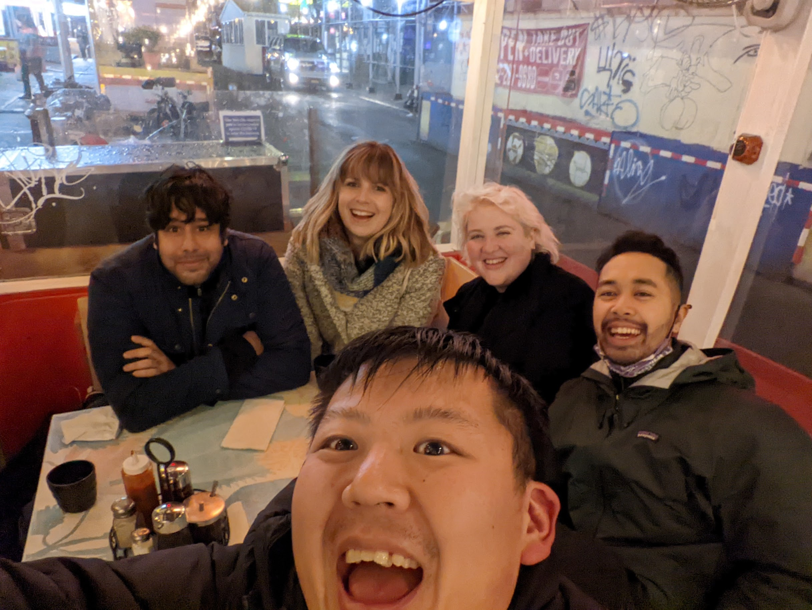

Week 2 at RC was basically me coming to terms with the fact that I am a human being and I can not do everything all at once. I really hate this fact. I am absolutely obsessed with all the cool things folks are doing here, especially creative coding wise, and it can be really hard not to simply hop from project to project, making little progress on my own work, ohh-ing and aww-ing the whole way down.

That being said, I did make some progress on my own learning endeavors… but I do need to narrow my project focus (story of my life). I’ve been continuing to read the R Packages book and learn about APIs (including best practices for API packages). At this point, I feel quite confident in my understanding of the general package development workflow but honestly feeling the freeze of perfectionism when it comes to working on the R API wrapper I have in mind. This led me to ask the #rstats Twitter hive-mind about how they plan out packages before developing and received this amazingly helpful response!
Rmd-Driven Development
The fusen package that Nono introduced me to follows the principle of RMarkdown Driven Development (RmdDD) which I’m quite infatuated with at the moment. If you struggle with perfectionism like I do, this can be a great way to simply start coding. Rather than stressing about whether I’m designing the perfect system, this method keeps me working through the actual analytical challenges I’m facing, encouraging strong documentation and testing practices along the way, and then builds my package from my development RMarkdown file like actual magic. My only complaint about the system is that functions are exported individually rather than as a family of functions as suggested by Hadley Wickham and Jenny Bryan in the R Packages book. I think the benefit of having your function definitions, examples, and tests all in one place might outweigh that drawback though.
The folks that brought us {fusen} also developed the {golem} package, a great framework for developing production-grade Shiny applications. I have been playing around with that tool as well and although {golem} and {fusen} are designed to be compatible, my initial exploration is suggesting that compatibility is not quite as straight forward as it could be from a workflow perspective. I’m hoping that I’ll figure this out more with time and maybe in a few weeks I will write up a tutorial with recommendations for how best to make use of both tools in tandem. Right now though, my biggest struggle is simply deciding what project (is feasible) to build out…
MLK Day Walking Tour
Although MLK Day is technically this week, I’m considering it here as the end of last week. To celebrate Martin Luther King Jr.’s revolutionary legacy, I organized some Recursers (including several awesome alumni!) to get together to check out abolitionist Mariame Kaba’s Slavery & Resistance in NYC walking tour. The digitized version was voted Glitch’s most inspiring app of 2021. I think one of the more shocking facts we learned on our self-guided tour was the fact that in 1835, a $100,000 reward was offered to anyone who delivered the dead bodies of the Tappan brothers, two abolitionists from Manhattan, to any slave state. For reference, that’s equivalent to more than 3 million dollars(!) today. Even if you’re not able to visit the sites in person (and many are no longer there), I’d highly recommend checking out the digitized version which has plenty of well-researched historical insights to learn from.
Although we were covering a lot of heavy topics on the tour, we celebrated getting to spend some quality in-person time together by warming up with some delicious dumplings and noodles at Noodle Village in Chinatown (HIGHLY recommend stopping there if you’re ever in the area).
